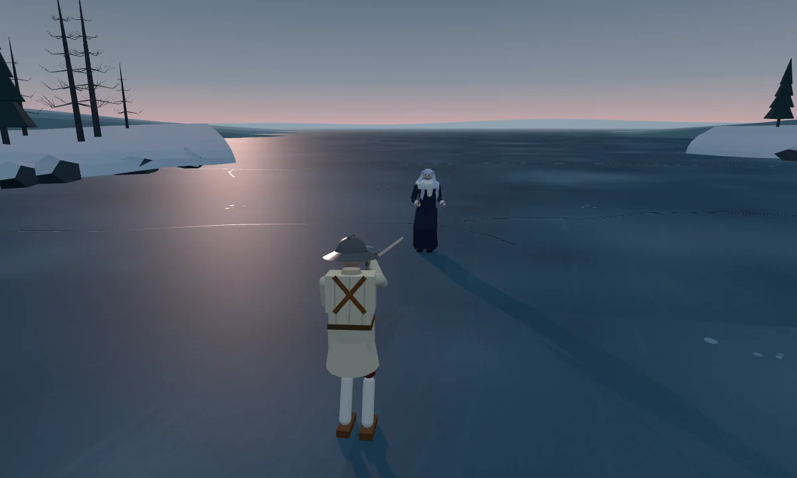
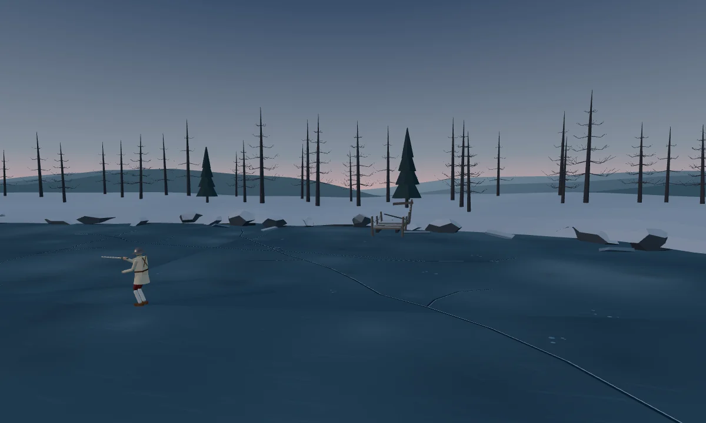

에이라 · 새 무대
새벽의 얼음만
탁 트인 호수와 낮은 수평선.
맑고 건조한 추위, 짙은 푸른 얼음과 은회색 서리. 먼 얼음의 울림이 적막을 가릅니다.
에이라 린드 · 신규 무대 · 2026.10.10
해가 뜨기 직전, 얼어붙은 호수의 만.
발밑의 흰 균열 너머로 낮은 숲과 넓은 새벽 하늘이 이어집니다.
새 무대에서 플레이할 수 있습니다.에이라의 결투가 겨울 호수 위로 옮겨왔습니다. 소리를 켜고, 짙은 얼음 너머 먼 울림을 들어보세요.


먹청색 얼음 속에 길게 뻗은 흰 균열과 작은 기포. 카메라가 돌 때 얇은 새벽빛이 얼음 위를 스칩니다. 눈으로 덮인 평지 사이사이에 맑은 얼음이 드러나, 발밑에서도 이 장소를 알아볼 수 있게 합니다.
동시베리아 내륙 호수에서 영감을 받은 가상의 장소입니다. 굽은 호숫가 안쪽이 얼어붙은 호수의 만이며, 만 입구 너머로 더 넓은 얼음 수면이 펼쳐집니다.
선착장과 말뚝은 결투 공간 바깥에 두어 인물과 칼끝이 잘 보이게 합니다.
옅고 건조한 바람. 긴 간격으로 멀리서 울리는 낮은 얼음 팽창음. 가까운 선착장의 나무와 밧줄이 짧게 삐걱이고, 발밑에서는 얇게 쌓인 눈이 사각거립니다.
공격음과 호흡을 가리지 않을 만큼 드물고 작게 둡니다. 바다 파도나 갈매기 소리, 타격마다 울리는 얼음 균열음은 넣지 않습니다.
에이라 · 새 무대
탁 트인 호수와 낮은 수평선.
맑고 건조한 추위, 짙은 푸른 얼음과 은회색 서리. 먼 얼음의 울림이 적막을 가릅니다.
이졸데 · 현재 무대
높은 성벽에 둘러싸인 적설 공간.
내리는 눈과 눈보라, 횃불·화로·창에서 번지는 주황빛. 돌과 불이 겨울을 둘러쌉니다.
겨울 호수 위 길을 건너 외딴 마을에 약과 편지를 전하는 순회 사제. 청백색 머리와 남색 사제복은 짙은 얼음과 옅은 수평선 앞에서 읽힙니다.
얼음 표면과 세 겹의 풍경, 적막한 소리를 새로 만들었습니다. 얼음 위에서도 익숙한 조작으로 겨룰 수 있습니다. 휴대폰에서는 인물의 가독성과 얼음 울림의 크기를 살펴봐 주세요.